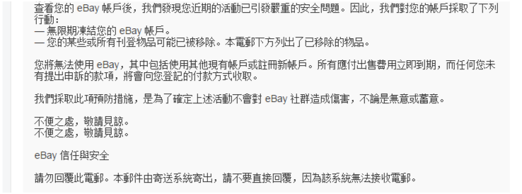

账号刚注册，listing还没上架就被冻结，eBay卖家懵了！
最近，卖家的日子着实不好过，亚马逊封号、Wish封店的风波还没过去，eBay又出事儿了，大批新开的帐户被冻结，真是“一波未平一波又起”，眼看旺季就要来临，卖家们今年真的太难了。 昨日，好卖仓了解到，许多卖家反映自己新注册的eBay账号被冻结，有卖家提供了自己收到的邮件通知，内容如下：
一个listing都没上架，咋就违规了？
有卖家说：“刚注册的企业账户，啥都没干，一个listing都没上架，一分钟之前还在说欢迎你注册eBay，后一分钟就被冻结了。”
据了解，卖家收到的邮件中显示“您近期的活动引发严重的安全问题”，对此有卖家猜想或许是因为店铺中有违规产品，或者仿货，建议下架仿货或者库存清零。但是被封号的卖家表示自己只注册了账号，根本没来得及上架产品，还有人说：“资料都没填完，就收到了冻结账号的邮件。”
之后有卖家回复邮件，得到的结果却是“无限期冻结帐户”，这让卖家不知所措，明明自己啥都没干，listing也没上架，怎么就因为违规而被冻结账号呢？
无限期冻结的账户解冻吗？
账号被冻结后，一些有经验的卖家纷纷支招，其中说的最多的就是找客户经理帮忙申诉。 有卖家表示，提供身份证和地址证明营业执照，然后找客户经理申诉就可以拿回账号了，但是必须是大客户经理，最低等级的入门级的经理不行。据了解，已经有卖家通过客户经理成功解冻账号。
卖家找eBay客服询问账号被冻结一事，客服说无限期冻结不是永久的，卖家需要去找安全部门获得申诉账号的机会，但是只能通过邮件联系，需要两个工作日的时间，但是有的卖家表示自己并没有获得账户申诉的机会。
eBay整治假海外仓行动
除了此次新账号被冻结外，之前eBay还出现过因为假海外仓业务导致额度被清零的案例。 好卖仓获悉，今年8月8月22日eBay官方发布了关于假海外仓专项治理行动的通知，旨在打击假海外仓业务。
公告中，eBay官方表示这些假海外仓业务严重危害了买家利益，也对合规卖家形成了不公平竞争，鉴于此，平台针对性地对一批假海外仓的账号实施了额度清零的严厉惩罚措施。 同时，eBay官方还严明将严厉打击各门类，各价格区段内的假海外仓商品，营造公平有序的市场竞争环境。